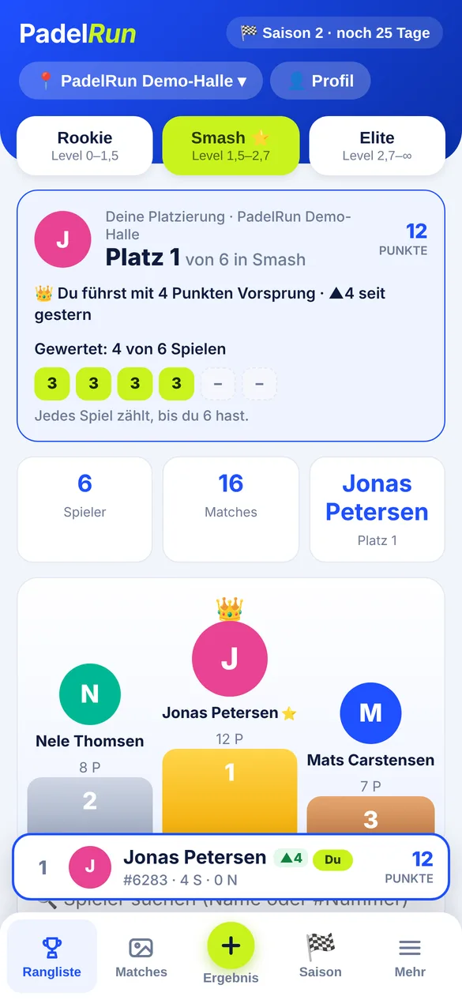
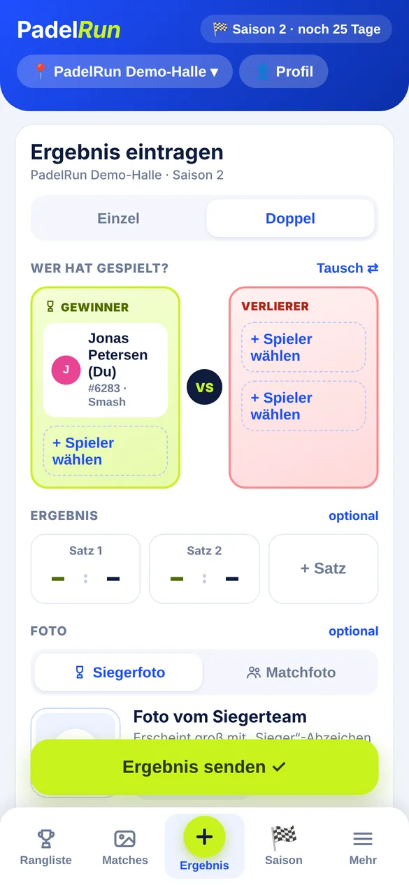
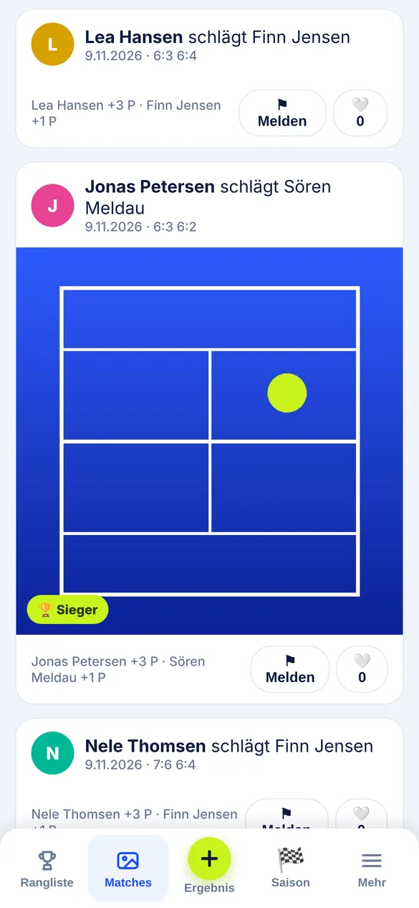
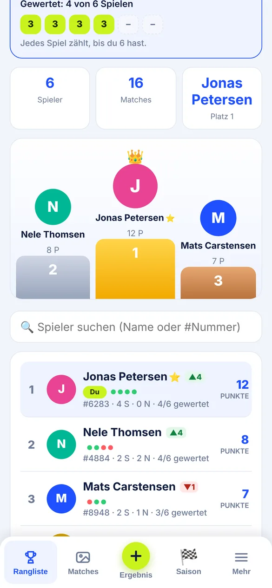

Bald im App Store
Wer ist die Nr. 1 in deiner Halle?
PadelRun ist die Rangliste für deine Padel-Halle. Du trägst deine Spiele ein, dein Gegner bestätigt, und du siehst, wo du stehst.

So geht's
-

1 Spiel eintragen
Einzel oder Doppel, Spieler wählen, Sätze eintippen. Dauert ein paar Sekunden.
-

2 Gegner bestätigt
Das andere Team bestätigt das Ergebnis. Ohne Rückmeldung gilt es nach 24 Stunden als bestätigt.
-

3 Punkte sammeln
Du spielst in deiner Liga – Rookie, Smash oder Elite. Pro Saison zählen deine 6 besten Spiele.
Für Hallen
Eure Spieler wollen wissen, wer vorne liegt. Mit PadelRun bekommt eure Halle eine eigene Rangliste – mit Ligen, Saisons und einem Aushang, über den Spieler per QR-Code beitreten.
Für Hallen, die jetzt in der Startphase dabei sind, ist PadelRun kostenlos.
Häufige Fragen
Was ist PadelRun?
PadelRun ist eine App, mit der jede Padel-Halle ihre eigene Rangliste bekommt. Spieler tragen ihre Matches ein, das gegnerische Team bestätigt das Ergebnis, und alle sammeln Punkte in ihrer Liga.
Wie trage ich ein Ergebnis ein?
In der App auf „Ergebnis“ tippen, Einzel oder Doppel wählen, die Spieler auswählen und senden. Das gegnerische Team bestätigt. Ohne Rückmeldung wird das Ergebnis nach 24 Stunden automatisch bestätigt.
Welche Ligen gibt es?
Es gibt drei Ligen nach Spielstärke: Rookie, Smash und Elite. So spielst du um Punkte gegen Leute auf deinem Niveau.
Wie wird die Rangliste berechnet?
Pro Saison zählen deine 6 punktstärksten Spiele. Bei Punktgleichstand entscheiden mindestens 6 Spiele, dann die höhere Siegquote, dann wer die Punktzahl zuerst erreicht hat.
Geht PadelRun auch im Doppel und mit Gästen?
Ja. Du kannst Einzel und Doppel eintragen. Im Doppel darf ein Spieler ohne App als Gast mitspielen; der Gast bekommt keine Punkte.
Wann und wo gibt es die App?
PadelRun kommt bald in den App Store für iPhone. Aktuell testen wir mit den ersten Spielern. Neuigkeiten gibt es auf Instagram unter @padel.run.
Was kostet PadelRun für Hallen?
Für Hallen, die in der Startphase dabei sind, ist PadelRun kostenlos. Die Halle bekommt eine eigene Rangliste und einen Aushang mit QR-Code, über den Spieler beitreten.
Wie trete ich der Rangliste meiner Halle bei?
Über den QR-Code auf dem Aushang in deiner Halle oder mit dem Hallencode, den du an der Theke oder von Mitspielern bekommst.
Noch Fragen? Hilfe & Kontakt